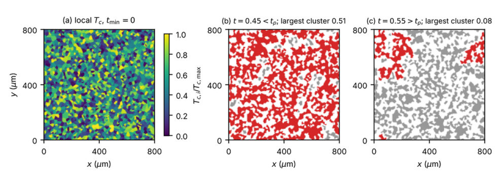
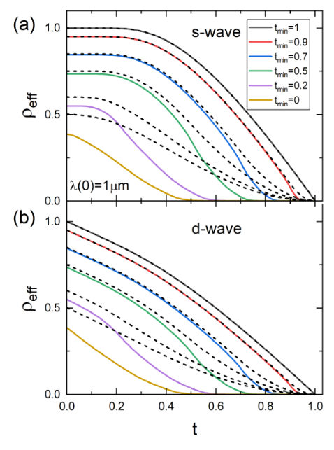

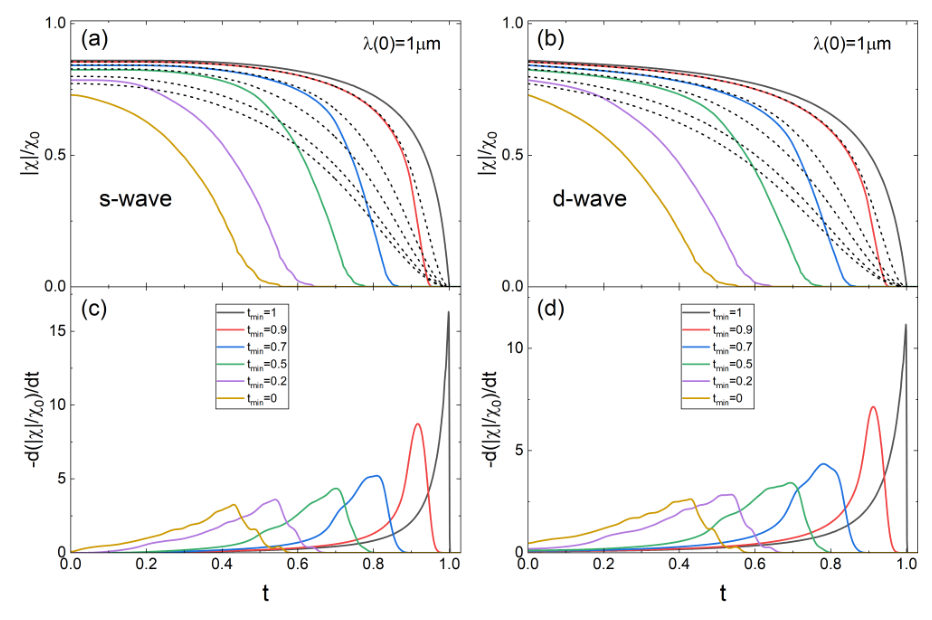
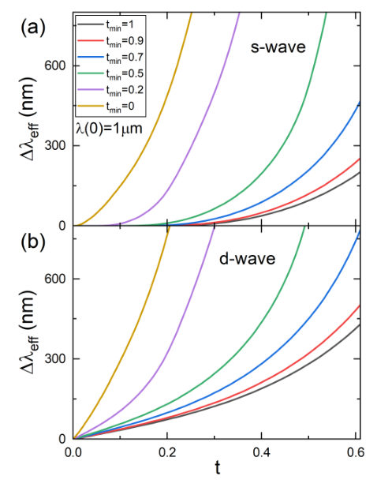
Authors: Ruslan Prozorov
Type: theory · Category: other · PDF: https://arxiv.org/pdf/2610.34796v1
Analysis basis: full PDF text, analyzed in chunks




Summary. This theoretical study investigates whether spatial variations in the critical temperature ($T_c$) within a superconducting film can account for an observed T-linear temperature dependence in the London penetration depth. By modeling the film as a random mosaic, the authors demonstrate that such a linear behavior is inconsistent with the physics of fully gapped superconductors unless the screening onset is significantly lower than the maximum local $T_c$. The work helps distinguish between intrinsic nodal behavior and disorder effects in superconducting films.
Why it may be interesting. This work provides a rigorous theoretical framework for interpreting transport measurements in complex, disordered superconducting materials, which is highly relevant to understanding real-world superconducting devices.
Main problem. To investigate whether the apparent T-linear temperature dependence of the London penetration depth, $\lambda(T)$, measured in superconducting films can be explained by spatial inhomogeneity in the local critical temperature ($T_c$).
Main result. The study concludes that a T-linear $\lambda(T)$ measured by whole-sample techniques cannot originate from $T_c$ mosaicity in a fully gapped superconductor if the screening onset is close to the maximum local $T_c$.
Method. The authors modeled the film as a random Voronoi mosaic of superconducting domains and used London electrodynamics to calculate the macroscopic magnetic susceptibility and superfluid density.
Model / system. The system is a superconducting film modeled as a random Voronoi mosaic of domains, each possessing an independent local transition temperature ($T_c$) distributed between $T_{c, ext{min}}$ and $T_{c, ext{max}}$. The response is analyzed for both s-wave and d-wave pairing symmetries.
Key observables. London penetration depth $\lambda(T)$, superfluid density $ ho_s(T)$, and the percolation temperature $T_p$.
Important parameters / regimes. The ratio of the screening onset temperature to $T_{c, ext{max}}$, and the minimum local $T_c$ ($T_{c, ext{min}}$).
Assumptions / limitations. The analysis assumes the thin-sheet limit, weak-coupling clean limit, and that the local London response is sufficient to describe the macroscopic behavior.
Figures summary. Figures illustrate the mosaic realization, the continuous rise of the magnetic susceptibility derivative ($ ext{d}\chi/ ext{d}T$) below the percolation threshold, and the comparison between effective and area-averaged superfluid densities.
Paper structure. The paper establishes the problem by noting the discrepancy between local and global measurements. It then develops the $T_c$-mosaic model using Voronoi tessellation and London electrodynamics. Key results are presented by analyzing the temperature dependence of $\lambda(T)$ for s-wave and d-wave cases, leading to the final conclusion regarding the origin of T-linear behavior.
Whole-sample and mutual-inductance part-sample measurements of the linear magnetic susceptibility, $χ$, of superconducting films are routinely used to obtain the London penetration depth, $λ(T)$, assuming uniform superconductivity. However, spatially resolved probes show that many films of current interest are inhomogeneous on micrometer scales. Here we ask whether a distribution of local transition temperatures in a fully gapped film can produce an apparent line-nodal, $T$-linear $λ(T)$. The film is modeled as a random Voronoi mosaic of domains with $T_c$ distributed between $T_{c,\min}$ and $T_{c,\max}$ with s-wave (also d-wave, for comparison) London response inside each domain. We show that detectable screening appears only below the percolation temperature, $T_p$, and the transition broadens with the spread of $T_c$. For s-wave domains, $λ(T)$ remains activated for any $T_{c,\min}>0$. Only for $T_{c,\min}=0$ does it become a power law, $Δλ\propto T^n$ with $n\approx1.7$, but then the onset of screening drops to $T_p=T_{c,\max}/2$. Weighting the $T_{c}$ distribution towards $T_c\to0$ (more low-$T_{c}$ domains) can bring $n$ closer to 1 ($n\approx1.2$), but simultaneously pushes the apparent transition, $T_p$, more than an order of magnitude below $T_{c,\max}$. For d-wave domains, the linear term survives, and its relative slope is enhanced almost fourfold for $T_{c,\min}=0$. Hence, a $T$-linear $λ(T)$ measured in a film with screening onset within a factor of a few of $T_{c,\max}$ by whole-sample or mutual-inductance part-sample measurements cannot originate from $T_c$ mosaicity in a fully gapped superconductor.
Authors: Servet Ozdemir, Ping-Luen Ho, Callum Brennan-Rich, Matthew Rogers, Philippa Shepley, Ahmet Yagmur, Ismet Gelen, Sehwan Song, Zabeada Aslam, Mannan Ali, Shelly Conroy, Sandrine Heutz, Gavin Burnell, B J Hickey
Type: experiment · Category: other · PDF: https://arxiv.org/pdf/2610.34736v1
Analysis basis: full PDF text, analyzed in chunks
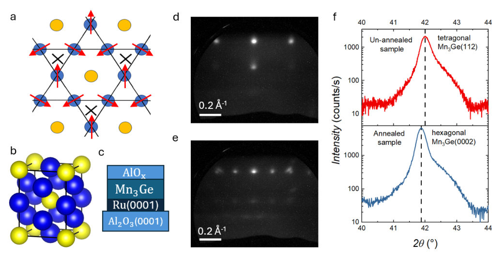
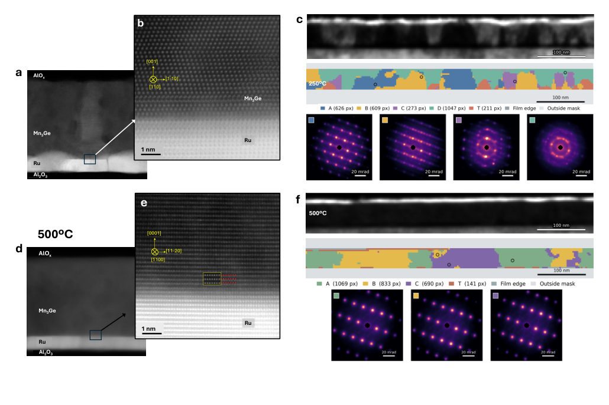
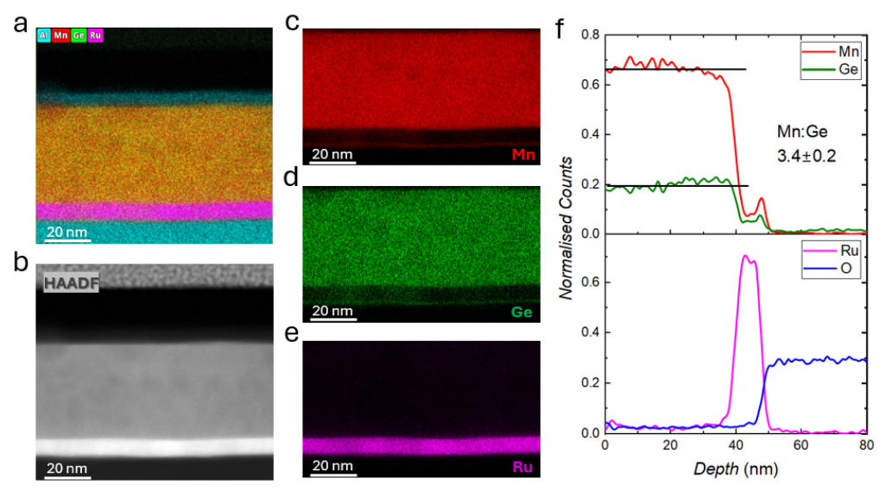
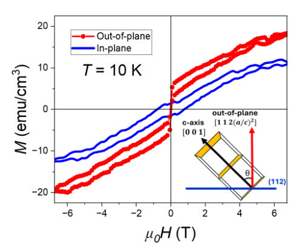
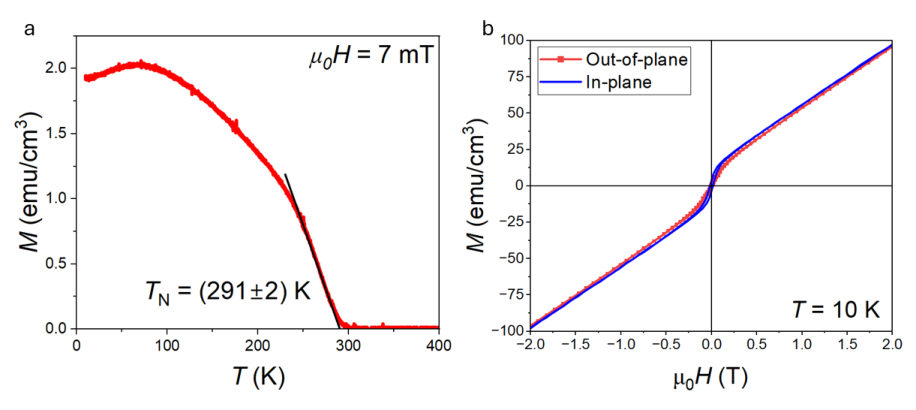
Summary. This work reports on the optimized epitaxial growth of D019 Mn3Ge thin films, a material of interest due to its topological Weyl semimetal properties. The authors achieved the desired hexagonal phase by growing an initial tetragonal phase and subsequently annealing the film. Characterization confirmed the structural transition and revealed the material's non-collinear antiferromagnetic ordering, suggesting potential for spintronic applications.
Why it may be interesting. The study provides detailed experimental evidence on controlling the crystal structure (D022 to D019) of a topological material using controlled thermal annealing, which is crucial for realizing predicted spintronic functionalities.
Main problem. The primary goal was to establish an easily reproducible growth recipe for high-quality epitaxial D019 Mn3Ge(0001) thin films.
Main result. The authors successfully grew high-quality D019 Mn3Ge films via a two-step process: initial growth of the D022 phase followed by annealing to induce the desired hexagonal D019 phase.
Method. The study employed single-target magnetron sputtering using a Mn5Ge target on an Al2O3 substrate seeded with Ru, followed by structural and magnetic characterization.
Model / system. The physical system is the Mn3Ge Heusler alloy, which is studied in its bulk Weyl semimetal form and its epitaxial thin film form, exhibiting topological and magnetic properties.
Key observables. Weak zero-field magnetization (0.0086 +/- 0.0002) mu_B/Mn, a Néel temperature of (291 +/- 2) K, and structural transitions confirmed by XRD and RHEED.
Important parameters / regimes. Annealing temperature (500°C), Mn:Ge stoichiometric ratio (3.4 +/- 0.2), and film roughness (reduced from 1.41 nm to 0.92 nm).
Assumptions / limitations. The structural transition from D022 to D019 is assumed to be the key step for realizing the desired topological and magnetic properties.
Figures summary. Figures show structural characterization (XRD, RHEED) confirming the D022 to D019 phase transition, STEM-EDX confirming stoichiometry, and magnetic measurements showing the weak, non-saturating magnetization characteristic of the antiferromagnetic order.
Paper structure. The paper details the growth process, showing initial D022 growth, followed by annealing to achieve the D019 phase. Characterization then confirms the structural transition, stoichiometry, and the resulting non-collinear antiferromagnetic magnetic ordering.
Materials with chemical identity Mn3X, where X is Sn, Ga, or Ge, are Heusler alloys with intriguing properties that are fundamentally and technologically interesting. They have topological properties with a non-trivial band structure that identify them as Weyl semimetals in the bulk. Their magnetic properties, which give rise to the topological band structure through spin-orbit coupling, are determined by their Kagome lattice structure, making them chiral non-collinear antiferromagnets. Among these materials, Mn3Ge is particularly interesting because it has a larger Berry curvature, leading to a large anomalous Hall conductivity and motivating potential spintronic applications. The desirable properties are only obtained when Mn3Ge has the D019 crystal structure, so producing an easily reproducible growth recipe is the main objective of this paper. Here we show that ultra-high-quality thin films of Mn3Ge with D019 symmetry can be grown from a Mn5Ge target on an Al2O3(0001) substrate with a Ru(0001) seed layer. The expected non-collinear antiferromagnetic order was confirmed by the finding of weak zero-field magnetisation (0.0086 +/- 0.0002) mu_B/Mn that does not saturate at high magnetic fields and has a Neel temperature of (291 +/- 2) K.
Authors: Dushyant Singh, Tharundev V, Subha Maity, Subhavenkadesh SS, Vigneshwari SR, Krista R. Khiangte
Type: experiment · Category: other · PDF: https://arxiv.org/pdf/2610.33637v1
Analysis basis: full PDF text, analyzed in chunks
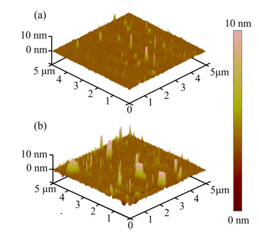
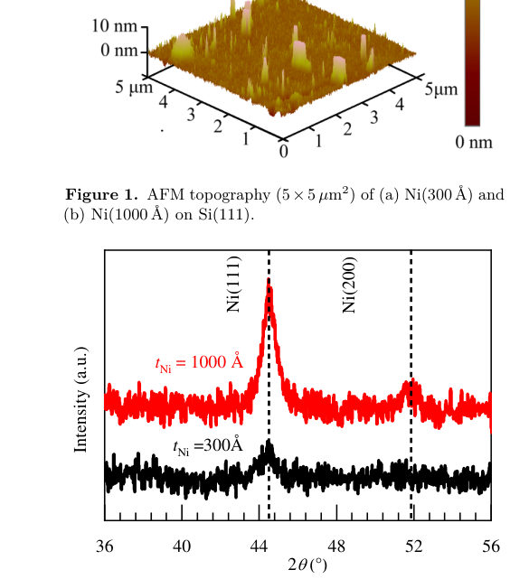
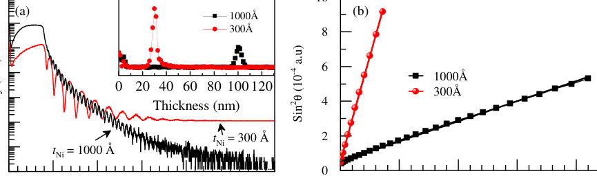
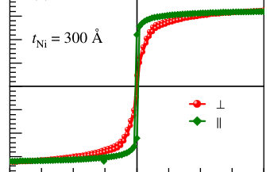
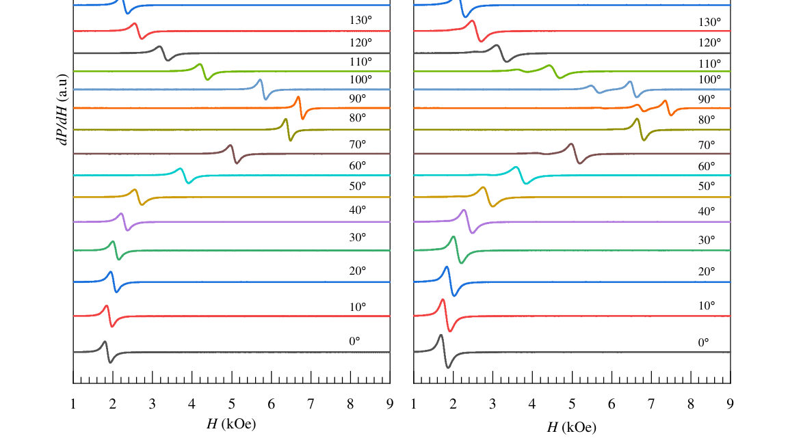
Summary. This experimental study investigates the magnetic anisotropy and g-factor of sputtered Ni thin films on Si(111) using angle-dependent Ferromagnetic Resonance. By fitting the resonance field across all angles, the authors determined the perpendicular anisotropy and g-factor for different film thicknesses. The work emphasizes that using the full angular dependence is crucial for accurate magnetic parameter extraction, correcting biases found in simpler measurements.
Why it may be interesting. While this is solid-state magnetism, the detailed analysis of magnetic anisotropy and g-factor extraction from resonance spectroscopy is a highly quantitative technique relevant to understanding spin dynamics in nanoscale magnetic systems.
Main problem. The study aims to determine the perpendicular magnetic anisotropy and the g-factor of sputtered Nickel (Ni) thin films grown on Si(111).
Main result. The full angular dependence analysis provided specific values for the g-factor and perpendicular anisotropies for both thin and thick films, showing discrepancies compared to conventional analysis.
Method. Angle-dependent Ferromagnetic Resonance (FMR) measurements were performed, analyzing the resonance field dependence across various angles using a uniaxial anisotropy model.
Model / system. The physical system is polycrystalline fcc Ni thin films (312 Å and 1011 Å) sputtered on Si(111). The analysis uses the Landau–Lifshitz–Gilbert equation and a free energy density incorporating uniaxial anisotropy terms ($K_1, K_2$).
Key observables. Resonance field ($ ext{H}R$), linewidth ($\Delta H$), saturation magnetization ($M_s$), g-factor, and effective perpendicular anisotropy ($K$).}
Important parameters / regimes. Saturation magnetization $\approx 480 ext{ emu cm}^{-3}$; $g$-factors $\approx 2.16$ and $2.10$; $K_{ ext{eff}}$ values $\approx 6.0 imes 10^5$ and $4.5 imes 10^5 ext{ erg cm}^{-3}$.
Assumptions / limitations. The analysis assumes the field is exactly aligned and that the full angular dependence is necessary to accurately determine magnetic parameters, correcting biases from conventional analysis.
Figures summary. Figures illustrate AFM topography, GIXRD patterns showing crystal structure, and XRR curves confirming film thicknesses. Figure 6 shows the resonance field dependence on the rotation angle for both film thicknesses.
Paper structure. The paper details structural characterization (AFM, GIXRD, XRR) followed by magnetometry and angle-dependent FMR. The core analysis involves fitting the resonance field using a full uniaxial anisotropy model to extract $g$, $M_{ ext{eff}}$, and anisotropy constants, comparing these results against simpler in-plane/perpendicular analyses.
Ni films with thicknesses of 312 and 1011\,Å were grown on Si(111) by dc magnetron sputtering at room temperature and studied by atomic force microscopy, grazing-incidence X-ray diffraction, X-ray reflectivity, magnetometry and angle-dependent ferromagnetic resonance. Both films are polycrystalline fcc Ni with smooth surfaces, a bulk-like (111) lattice spacing and a saturation magnetization of ${\approx}480$\,emu\,cm$^{-3}$, and both are magnetized in plane. The angular dependence of the resonance field, from the film plane to the film normal, is described by a uniaxial anisotropy model with first- and second-order terms. From this model, $g = 2.160\pm0.005$ and $2.101\pm0.014$ and effective perpendicular anisotropies of $(6.0\pm0.4)\times10^{5}$ and $(4.5\pm0.6)\times10^{5}$\,erg\,cm$^{-3}$ were obtained for the thinner and thicker film, respectively. The conventional analysis of only the in-plane and perpendicular resonances gives $g$-factors that are lower by 0.02--0.04. The perpendicular linewidths give upper limits for the Gilbert damping of $α\le 0.030$ and $\le 0.038$.
Authors: Sulagna Dutta, Subhajit Chatterjee, Vivas Bagwe, Pritam Das, S. Anantha Bharathi, C. Nikhil, M. S. Ramachandra Rao, Pratap Raychaudhuri
Type: experiment · Category: other · PDF: https://arxiv.org/pdf/2610.34319v1
Analysis basis: full PDF text, analyzed in chunks
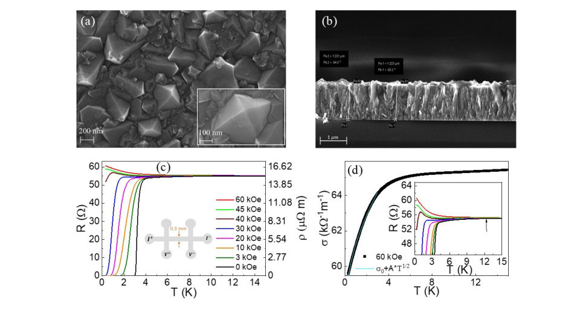
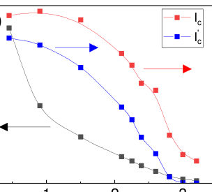
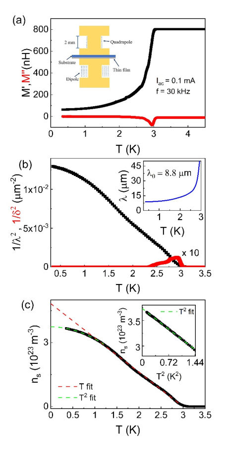
Summary. This paper experimentally investigates superconductivity in granular boron-doped diamond films, treating them as Josephson Junction Networks. By measuring the temperature dependence of the magnetic penetration depth, the authors confirm that the superconducting state is dominated by phase fluctuations. The results provide quantitative evidence for the theoretical predictions governing such disordered, low-dimensional superconducting systems.
Why it may be interesting. The detailed experimental confirmation of phase-fluctuation-dominated superconductivity in a solid-state, granular system provides a tangible platform to test fundamental theories of superconductivity beyond the simple BCS framework.
Main problem. The study investigates superconductivity in a granular boron-doped diamond film, focusing on the role of phase fluctuations in determining its superconducting properties.
Main result. The film exhibits classic phase-fluctuation-dominated behavior, with measurements confirming a low superfluid stiffness consistent with the Ambegaokar-Halperin theory for Josephson Junction Networks.
Method. The research combines transport measurements (R-T, I-V) with advanced magnetic characterization using a two-coil mutual inductance technique to measure the complex penetration depth.
Model / system. The physical system is a 1.2-$\mu$m-thick granular boron-doped diamond film, which is modeled as a disordered network of Josephson junctions. The analysis relies on theories describing superconductivity dominated by phase fluctuations, where the superfluid stiffness is key.
Key observables. Superfluid density ($n_s$), complex penetration depth ($\lambda(\omega)$), resistance vs. temperature ($R-T$), and I-V characteristics.
Important parameters / regimes. Low superfluid stiffness ($ ho_s$) in the range of 0.5–0.8 K; critical temperature ($T_c \sim 3$ K); penetration depth ($\lambda_0 \sim 8.8 \mu$m).
Assumptions / limitations. The superconducting behavior is accurately modeled by the Ambegaokar-Halperin theory for Josephson Junction Networks, and the low-temperature behavior is governed by thermal and quantum phase fluctuations.
Figures summary. Figures show SEM images of the granular structure, R-T curves defining $T_c$, and plots of the complex mutual inductance ($\mu', \mu''$) used to derive the temperature dependence of the superfluid density ($\lambda^{-2}$), showing transitions between linear-in-$T$ and $T^2$ regimes.
Paper structure. The paper progresses by characterizing the material structure (SEM), measuring transport properties (R-T, I-V), and then using magnetic measurements (mutual inductance) to extract the temperature dependence of the superfluid density, comparing these findings to established theoretical models of phase fluctuations.
We investigate the superconducting properties of a 1.2-μm-thick granular boron-doped diamond film, where tightly packed grains form a disordered network of Josephson junctions. The film exhibits a sharp superconducting transition at a critical temperature, T_c ~ 3 K. Its transport properties are well described by the Ambegaokar-Halperin theory of phase fluctuations. Direct measurements of the penetration depth using a two-coil mutual inductance technique reveal classic phase-fluctuation-dominated behavior: below T_c, the superfluid density (n_s) varies linearly over a wide temperature range - a hallmark of thermal phase fluctuations - before crossing over to a T^2 dependence at ultra-low temperatures. Both the large low-temperature penetration depth, λ(0) ~ 8.8 μm, and the slope of the linear ns variation in the thermal regime reveal a remarkably low superfluid stiffness in the range of 0.5-0.8 K. These results establish granular boron-doped diamond films as an excellent model system for investigating the role of long-wavelength phase fluctuations in three-dimensional superconductors.
Authors: Duan-Yun Xia, Xiu-Bin Wang
Type: theory · Category: other · PDF: https://arxiv.org/pdf/2610.33560v1
Analysis basis: full PDF text, analyzed in chunks
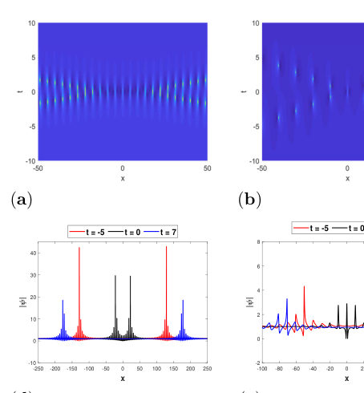
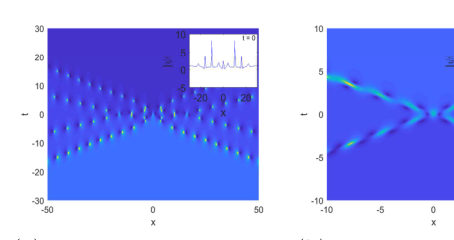
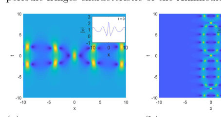
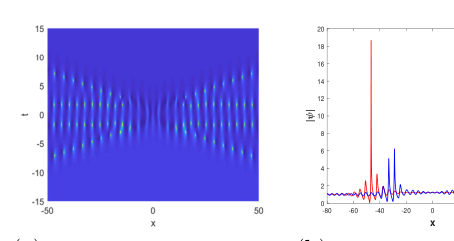
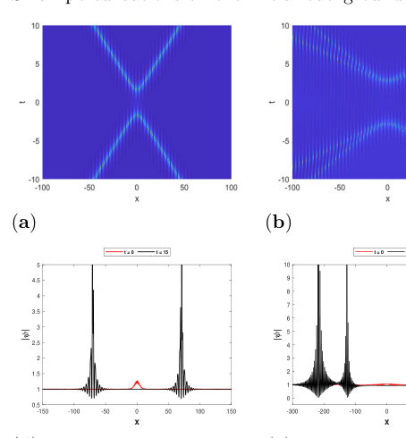
Summary. This paper develops the theory of superregular solitonic solutions for the defocusing nonlocal nonlinear Schrödinger equation using the dressing method. It derives explicit analytical forms for multi-soliton solutions and confirms their stability and robustness via numerical simulations. The findings advance the understanding of wave propagation in nonlocal nonlinear media.
Why it may be interesting. This work provides rigorous analytical solutions for complex wave phenomena (superregular solitons) in nonlocal media, which is highly relevant for theoretical quantum optics and nonlinear wave dynamics.
Main problem. The study investigates the existence and properties of superregular solitonic solutions for the defocusing nonlocal nonlinear Schrödinger equation (NLSE) during the nonlinear stage of modulation instability.
Main result. The paper successfully derives general N-solitonic solutions and confirms the existence of superregular solutions for the nonlocal defocusing NLSE, which contrasts with previous findings for the local case.
Method. The authors employ advanced mathematical techniques, specifically the dressing method combined with the Joukowski transformation, to systematically derive the exact analytical solutions.
Model / system. The model is the defocusing nonlocal NLSE, analyzed in its reverse-time form. The system describes nonlinear wave propagation in nonlocal media, relevant to fields like nonlinear optics.
Key observables. N-solitonic solutions, one-solitonic solution (composed of two interacting wave components), two-solitonic solution (containing four wave components), and the stability/robustness against noise.
Important parameters / regimes. Defocusing regime ($\sigma = -1$), the number of solitons ($N$), and the initial perturbation strength.
Assumptions / limitations. The analysis relies on the dressing method and assumes specific asymptotic constraints on the dressing function $\chi(\lambda)$ to derive the general solution structure.
Figures summary. Figures illustrate the profiles of superregular two-solitonic solutions, showing the difference between elastic coalescence ($z_1=z_2$) and separation ($z_1 eq z_2$), and comparing exact solutions with numerical simulations, including noise robustness tests.
Paper structure. The paper progresses from establishing the physical context (MI in nonlocal NLSE) to deriving the general N-solitonic solution using the dressing method. It then provides explicit forms for one- and two-solitonic solutions, concluding with numerical verification of the analytical results.
Previous studies have indicated that the local defocusing nonlinear Schrödinger equation (NLSE) is modulationally stable. Therefore, superregular solitonic solutions characterizing the nonlinear evolution of modulational instability under weak localized perturbations do not exist. In this work, we study the nonlinear stage of the modulation instability of a condensate in the framework of the defocusing nonlocal NLSE. By using the dressing method and Joukowski transformation, we systematically derive the general $N$-solitonic solution of the defocusing nonlocal NLSE, and the explicit expressions for one-solitonic, two-solitonic and superregular two-solitonic solutions are provided. Then dynamics of these solutions is also examined. We find that these solutions show a much wider variety than those in the local NLSE, such as the one solitonic solution composed of two interacting wave components and the two-solitonic solution containing four wave components. Finally, the accuracy and noise robustness of the analytical solutions are confirmed by numerical simulations. Such results advance the theory of superregular solitonic solutions in nonlocal systems and offer new physical understanding of wave propagation in nonlocal nonlinear media.
Authors: Mingyu Lee, Myungjun Kang, Sangmo Cheon
Type: theory · Category: other · PDF: https://arxiv.org/pdf/2610.34315v1
Analysis basis: full PDF text, analyzed in chunks
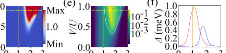
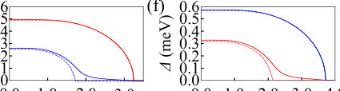

Summary. This theoretical work demonstrates that in Type-II Weyl Semimetals, the degree of Weyl cone tilt dictates the nature of multi-gap superconductivity. By analyzing the pairing susceptibility, the authors show that the tilt can selectively enhance a secondary pairing channel, causing the secondary superconducting gap to become larger than the primary gap, a mechanism controlled entirely by band structure geometry.
Why it may be interesting. The concept of using band structure geometry (the tilt) as a direct, tunable knob to control the fundamental superconducting pairing symmetry and gap structure is highly relevant to designing novel topological superconductors.
Main problem. The paper investigates how the tilt in Type-II Weyl Semimetals (WSMs) controls the emergence, number, and relative size of superconducting gaps in the resulting multi-gap superconducting state.
Main result. The tilt acts as a microscopic control parameter that redistributes pairing susceptibility, leading to a 'tilt-driven reversal' where the secondary superconducting gap can exceed the primary gap, while inter-gap coupling locks both gaps to a common critical temperature.
Method. The authors classified symmetry-allowed on-site pairing channels using $D_4$ symmetry and solved coupled gap equations derived from the Bogoliubov-de Gennes (BdG) Hamiltonian in the weak-coupling limit.
Model / system. The system is a time-reversal symmetric, tilted Weyl semimetal modeled by a minimal Dirac Semimetal Hamiltonian. The superconductivity is analyzed using the BdG formalism, focusing on intra-band ($\Delta_1, \Delta_2$) and inter-band pairing channels.
Key observables. The two distinct superconducting gap amplitudes ($\Delta_1, \Delta_2$), the superconducting gap hierarchy, and the critical temperature ($T_c$).
Important parameters / regimes. The Weyl cone tilt (microscopic control parameter), the effective coupling strengths, and the Fermi surface sector susceptibility ratio ($\chi_2/\chi_1$).
Assumptions / limitations. The analysis relies on approximating momentum-dependent terms by their Fermi surface average and solving the gap equations in the weak-coupling limit.
Figures summary. Figure 1(a) shows the fully gapped multi-gap spectrum for the $A_1$ channel, and the temperature evolution of the pairing kernel is shown in subsequent panels, demonstrating the gap structure change with tilt.
Paper structure. The paper proceeds by establishing the theoretical framework using the WSM Hamiltonian, classifying pairing symmetries, deriving the coupled gap equations, and finally analyzing the effect of the tilt parameter on the resulting two-gap superconducting state.
In type-II Weyl semimetals, strongly tilted Weyl cones produce coexisting electron and hole pockets, a natural multi-band setting for superconductivity, yet how the tilt controls the number and relative size of the superconducting gaps remains unclear. Here we classify the symmetry-allowed on-site pairing channels of a simple time-reversal symmetric tilted Weyl-semimetal model with $D_4$ symmetry and identify the fully symmetric $A_1$ channel as the leading instability for attractive on-site interactions, supporting a fully gapped two-gap state. The tilt acts as a microscopic control parameter, redistributing the band-resolved pairing susceptibility between the two Fermi-surface sectors rather than simply rescaling the total density of states. Once the tilt sufficiently enhances the secondary channel, a robust secondary gap develops and can exceed the primary gap even at weaker effective coupling, while inter-gap coupling locks both gaps to a common critical superconducting temperature. The Weyl cone tilt thus controls the emergence and hierarchy of multi-gap superconductivity.